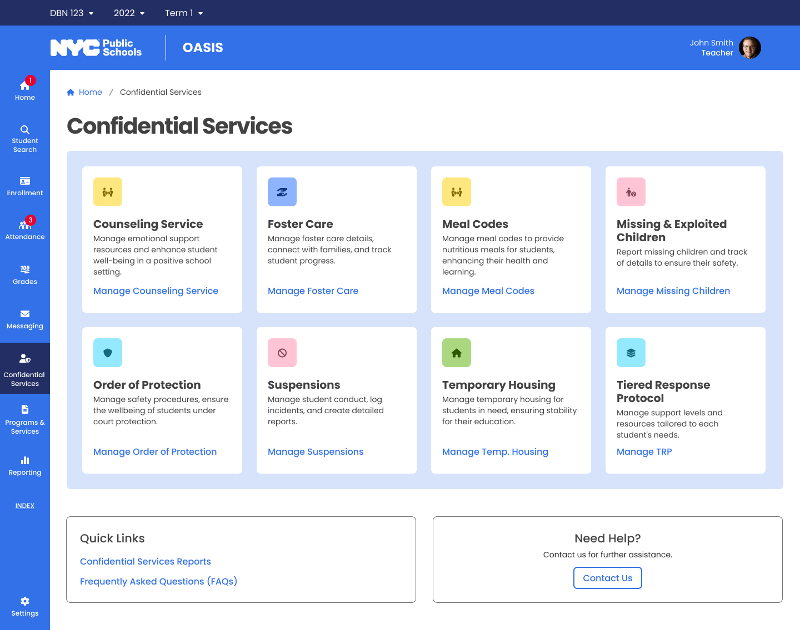
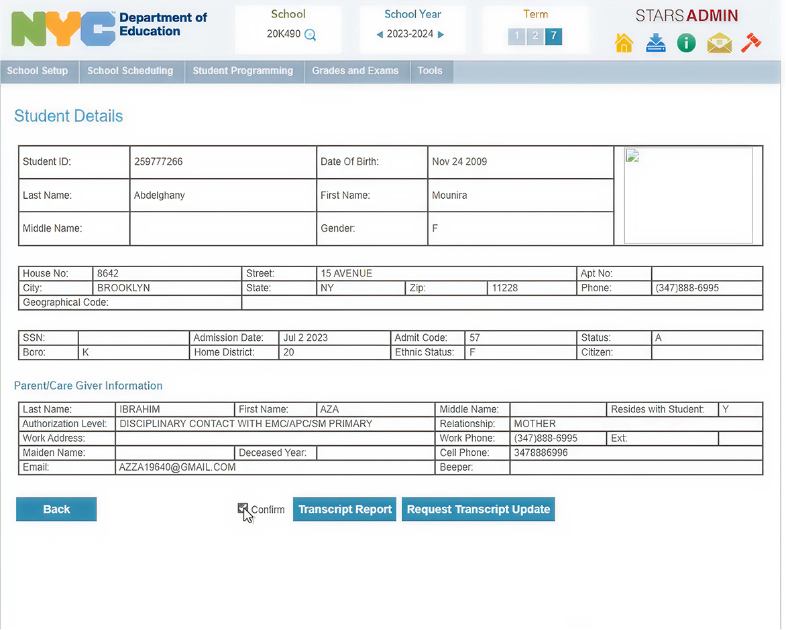
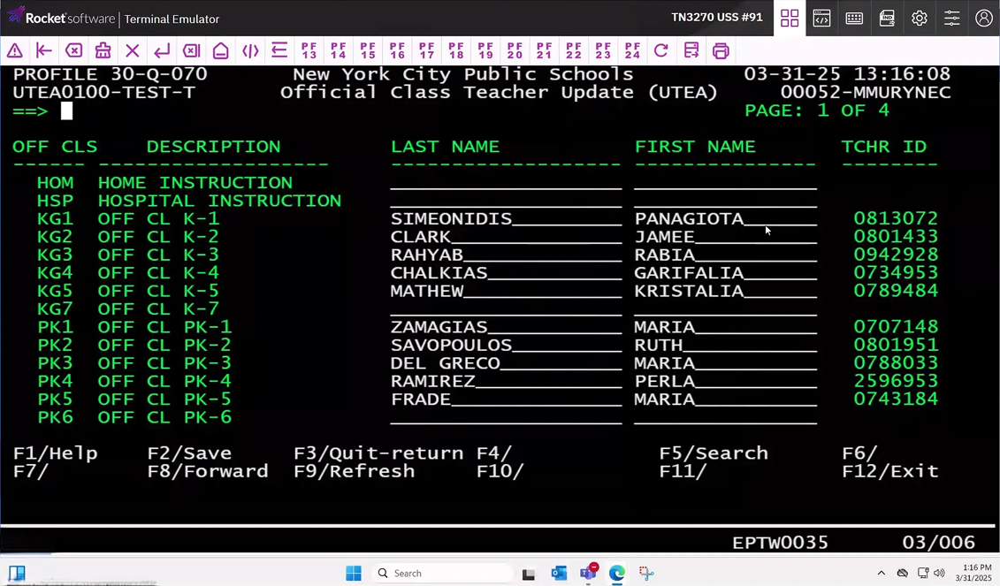
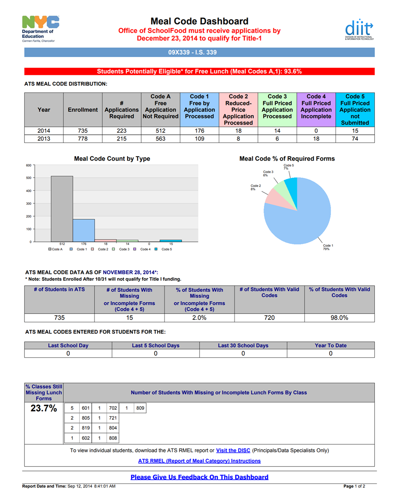
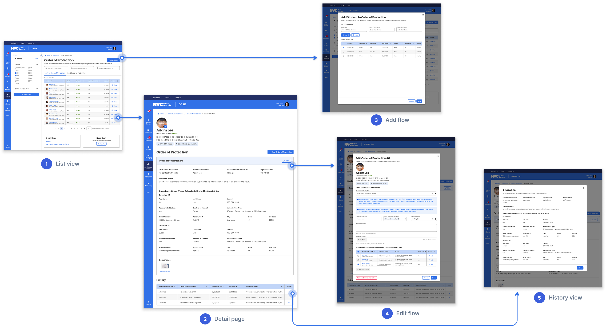
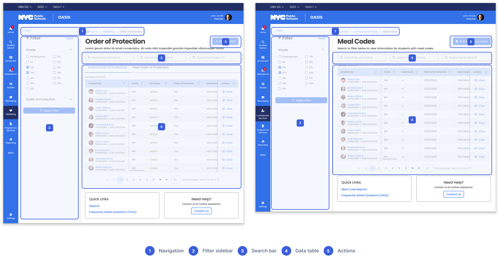
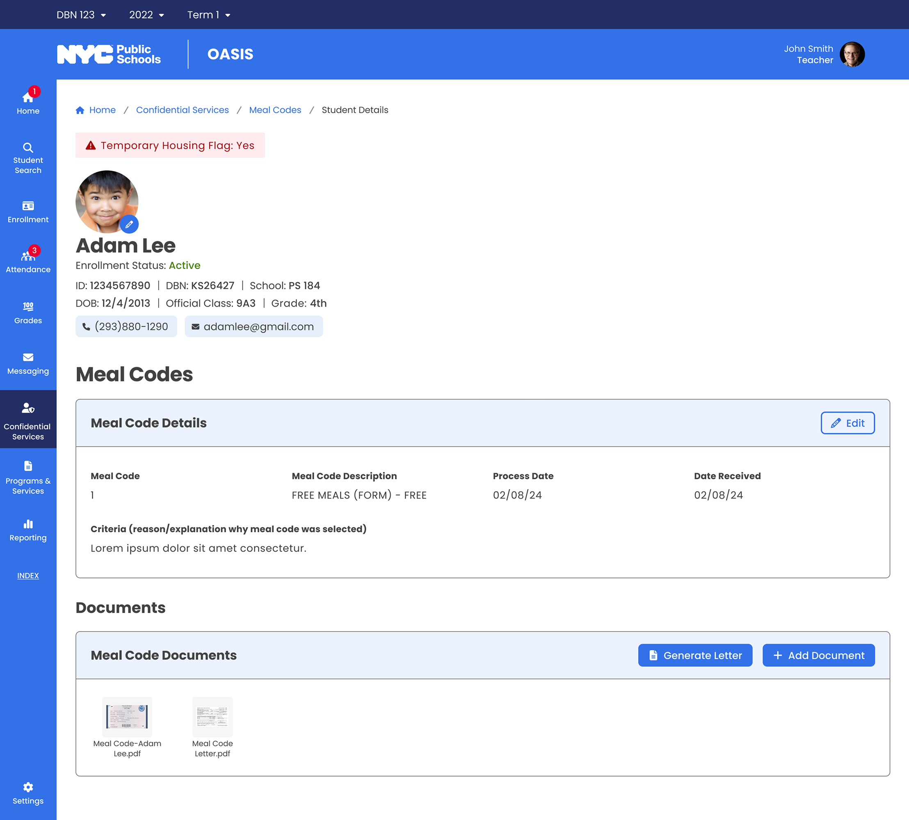
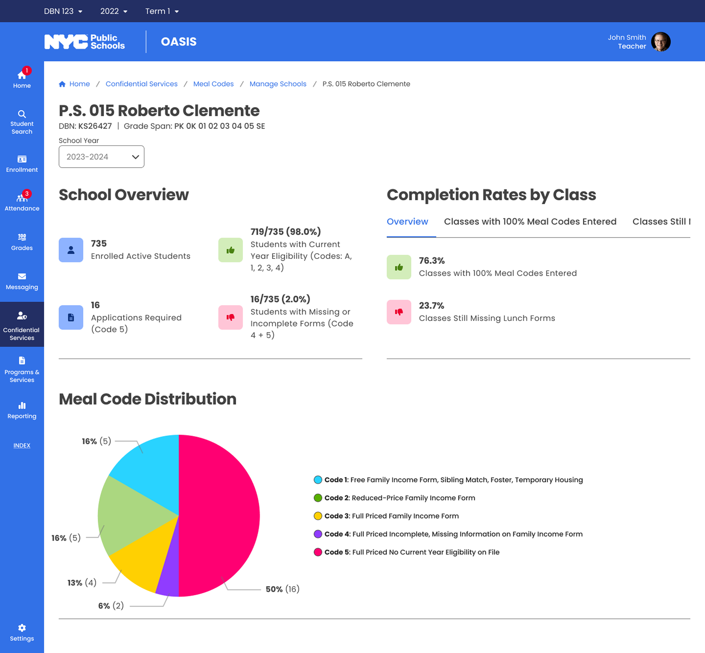
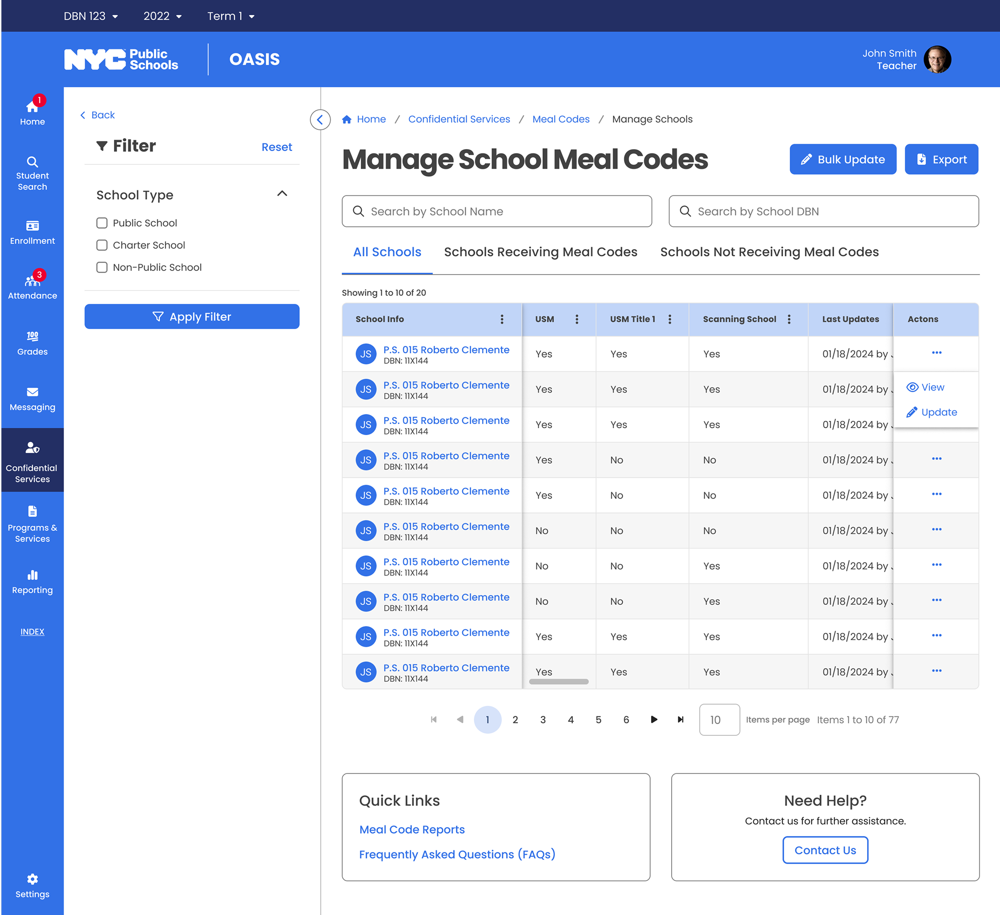
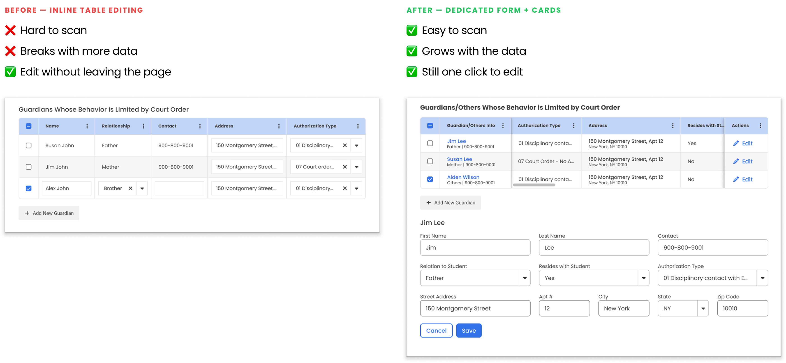

Building one unified platform for 1.1M+ students across 1,800 NYC public schools
B2B
Complex Workflows
Data Privacy
Multi-Role Access
Project
OASIS — Confidential Services Module
Client
NYC Department of Education
Role
Sole UX Designer
Timeline
March 2024 – August 2025
Scope
8 sub-modules · 3 user roles · Full design-to-QA lifecycle

Overview
One designer owning the full design lifecycle
🛠️ How I Worked
Sole designer across the full lifecycle — business requirements, wireframes, hi-fi specs, and QA documentation. Led cross-functional reviews with engineers, BAs, and compliance teams across 8 sub-modules over 1.5 years.
🚀 What Shipped
A unified interaction system deployed to 1,800 schools — one consistent pattern that scaled from 8 sub-modules to 12+ without redesign.
Context
The system behind NYC's most sensitive student records.
OASIS is the student information system for New York City's K-12 public schools — the largest school district in the United States. The Confidential Services module handles foster care placements, temporary housing, orders of protection, missing children reports, and meal eligibility.
Three user roles depend on this data daily, each with different responsibilities and data scope:
Teacher
Scope: Classroom
Quick access to individual student records — meal eligibility, active orders of protection — so they can respond in the moment.
School Admin
Scope: Building-wide
Processing foster care placements, updating housing records, ensuring the school's data is complete and compliant.
Center User
Scope: Multi-school
Monitoring compliance across an entire district, identifying schools behind on updates, drilling into any school's data when issues arise.
Three roles with different content, permissions, and workflows — what each person sees depends on their responsibilities.
Project structure
Problem
Sensitive records trapped in systems built decades ago.
The legacy systems
Before OASIS, staff relied on STARS — a command-line interface with text-based navigation — and a basic Windows application with simple forms. Neither was designed for modern compliance requirements.
The daily reality
A school admin processing a foster care placement might check one system for housing status, another for orders of protection, and a spreadsheet for meal eligibility — all while ensuring privacy compliance across disconnected tools.

Student Tracking System (STARS)

Attendance Tracking System (ATS)

Meal Code Report
Three systems, manual cross-referencing
Challenges
Eight modules, three roles, zero margin for error.
🧩 8-in-1 Product
Eight categories from foster care to meal codes — each with its own data model, compliance rules, and edge cases. All needed to feel like one product.
🎭 Role-Based Complexity
Three roles touch the same data but need entirely different views, permissions, and workflows. One-size-fits-all would fail usability and privacy.
🤝 Stakeholder Alignment
Each sub-module had its own compliance team, SMEs, and DOE program office — aligning them required constant communication and iterative reviews.
Protected Under NDA
This project involves confidential student data and proprietary system designs. Solution screens are not publicly shown. Please reach out for a portfolio walkthrough!
Eight sub-modules with different data types could easily become eight separate products. Staff deal with high-stakes, time-sensitive situations — relearning the interface for each record type adds cognitive load where it matters most.
Solution
I designed a consistent pattern — list view → detail page → add/edit → history — across all 8 sub-modules. Staff who learn one category can navigate any other without retraining. This pattern later scaled to 4+ additional modules.

List → detail → add/edit → history

Different modules, same pattern
Solution 02
Every role sees exactly what they need.
Challenge
Meal code compliance lived in standalone PDFs, per-school spreadsheets, and manual cross-referencing. Center users had no aggregated view — they checked compliance school by school, manually cross-referencing PDF reports.
Solution
I redesigned the information architecture into role-appropriate views:

Teachers · Classroom
Meal eligibility records — just what they need to respond in the moment.

School Admins · Building-wide
Complete meal code data — update records, resolve discrepancies, run reports.

Center Users · Multi-school
Aggregate compliance dashboard — drill down to any school when needed.
Solution 03
Designing for data that keeps growing.
Challenge
The original guardian information design worked for simple cases — one or two guardians. As requirements grew, more guardian types and fields needed accommodating. The initial layout couldn't absorb the growth.
Solution
I redesigned guardian info as structured cards: name and actions at top, scrollable detail area, clear separation between entries. Whether one guardian or six, the layout stays organized and scannable.

Structured cards that scale with data
Impact
Real improvements for the people doing the work.
~70%
Fewer Screens
What previously required navigating 5-6 separate screens now lives in one unified interface.
8 → 12+
Modules Using One Pattern
The interaction model designed for 8 sub-modules scaled to 4+ additional modules without redesign.
~60%
Faster Onboarding
Staff trained on one category could navigate all others immediately — because every sub-module follows the same pattern.
1,800
Schools Served
Live and serving staff who manage safety records for 1.1 million students across NYC's public school system.
Recommendations
What my colleagues say
"Huchong is a talented and thoughtful UX designer with a strong sense of clarity and consistency. He simplifies complex problems with ease and delivers user-centric solutions with professionalism and calm focus. Any team would benefit from his design maturity and collaborative spirit."
Phani Vasireddy
UI/UX Designer
"Huchong is a talented and highly reliable UI/UX designer. I oversaw his work on an expansive project with the NYC Department of Education, and he consistently delivered quality work in a timely manner in a high-pressure environment. I would gladly work with him again on future projects."
Jennifer Tavis
OASIS Project Director
"Huchong is a talented UX Designer who's always approachable and willing to help. He consistently delivered quality work on time and made collaboration effortless — truly one of the best to work with. His reliability, creativity, and supportive nature make him an asset to any team."
Minu George
Business Analyst
Takeaways
What I learned
🧱 Consistency Reduces Risk
Cognitive load isn't just a UX problem — it's a safety problem. Shared patterns mean staff focus on the student, not the interface.
💬 Communication Drives Clarity
Different compliance teams for each sub-module meant defining the right problem depended on asking the right questions. Review decks became the alignment tool.
🔒 Privacy Is a Design Material
Federal and city regulations shaped every default state and permission level. Privacy wasn't a constraint — it was a core design material from the start.